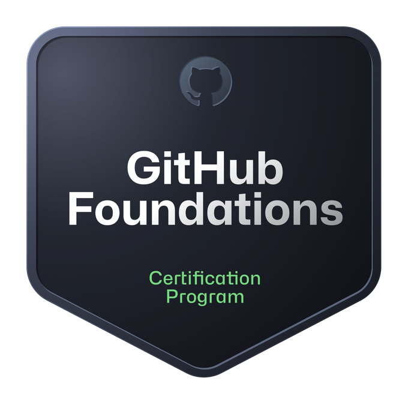

$ whoami
tobias radkovský — student developer
$ pwd
/prague/cz
$ date
$ ./init --name
Tobias Radkovský
student developer / prague, cz
I build things that interest me. From experimenting with AI powered web apps to trying coding MLs from scratch. I prefer understanding how things work from the ground up over using black-box solutions.
# plaintext profile — no bloat
background
I have been programming for about 3 years specializing in Python. I have experience in building backend with a Python library called Flask as I have participated in multiple projects utilizing it. My experience with frontend frameworks is limited.
My current ambitions are learning TypeScript as a way to enhance my web development skills and learning the way MLs/neural networks work and how to program them from scratch.
beyond the terminal
When I'm not writing code, I do music. I've been playing classical piano for over 10 years and compose electronic/rock music as a hobby.
I also enjoy singing and producing for multiple rock/metal bands.
In my free time, I try to challenge myself with learning new math, physics or programming concepts.
languages
education
# things i have shipped
./wherelse.sh --run --compare "notion vs obsidian"
Wherelse
↗A full-stack web application built with Flask and Tailwind CSS. Wherelse is a webapp that turns the chaos of online opinions into clean, structured comparisons with built in Google API and Tavily API integration.
✓ build: ok · exit 0 · 0 errors
pip install richprinted
Richprinted
↗A drop-in, dependency-light replacement for Python's print() that adds smart type detection, color themes (to be added), and structured, readable output for terminals improving productivity and understanding of your data.
✓ published to pypi · exit 0 · 0 errors
# packages installed on this machine
# proof of work · click a window to expand

Github Foundations
// click to expand

TryHackMe Presecurity path
// click to expand
# end of transmission — over to you
I'm always open to interesting projects and part time jobs! I am primarily looking for opportunities which would advance my skills and experience and develop my current knowledge.